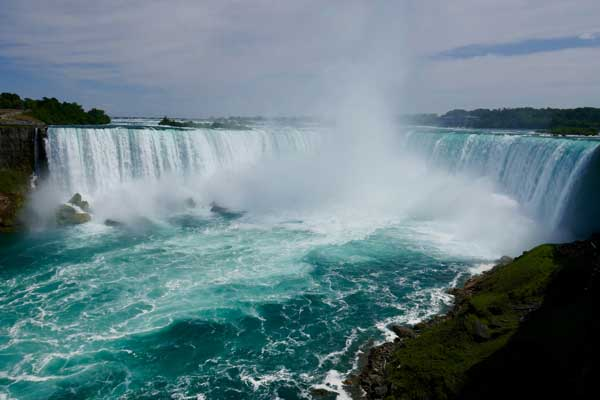

Niagara Falls is a group of three waterfalls at the southern end of Niagara Gorge, spanning the border between the province of Ontario in Canada and the state of New York in the United States. The largest of the three is Horseshoe Falls, also known as Canadian Falls, which straddles the international border of the two countries. The smaller American Falls and Bridal Veil Falls lie within the United States. Bridal Veil Falls is separated from Horseshoe Falls by Goat Island and from American Falls by Luna Island, with both islands situated in New York.
Located on the Niagara River, which drains Lake Erie into Lake Ontario, the combined falls have the highest flow rate of any waterfall in North America that has a vertical drop of more than 50 m (160 ft). During peak daytime tourist hours, more than 168,000 m3 (six million cubic feet) of water goes over the crest of the falls every minute. Horseshoe Falls is the most powerful waterfall in North America, as measured by flow rate. Niagara Falls is famed for its beauty and is a valuable source of hydroelectric power. Balancing recreational, commercial, and industrial uses has been a challenge for the stewards of the falls since the 19th century.
Niagara Falls is located 27 km (17 mi) north-northwest of Buffalo, New York, and 121 km (75 mi) south-southeast of Toronto, between the twin cities of Niagara Falls, Ontario, and Niagara Falls, New York. Niagara Falls was formed when glaciers receded at the end of the Wisconsin glaciation (the last ice age), and water from the newly formed Great Lakes carved a path over and through the Niagara Escarpment en route to the Atlantic Ocean.
